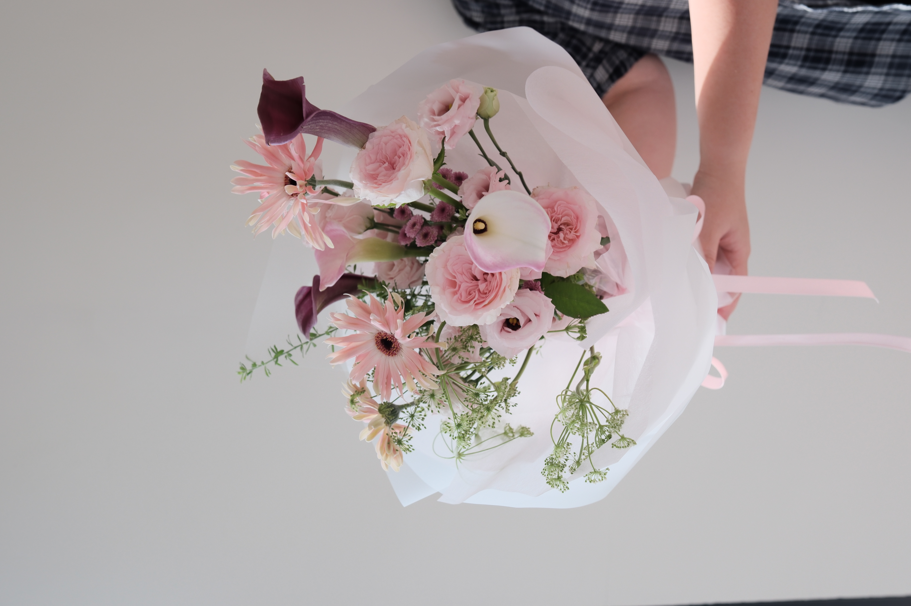
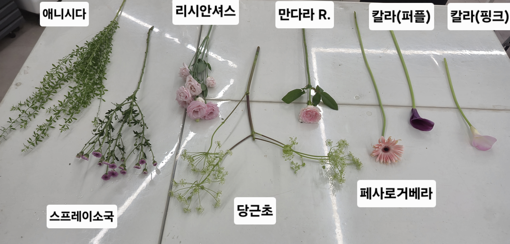
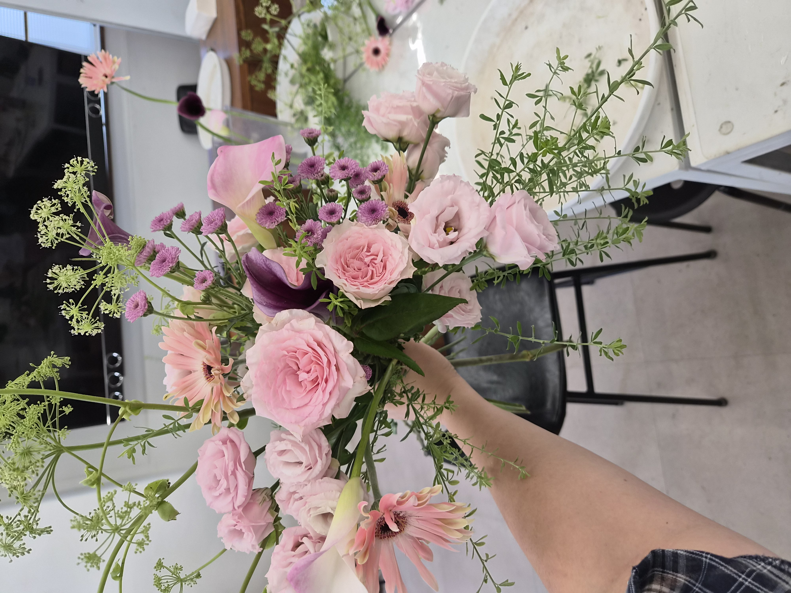
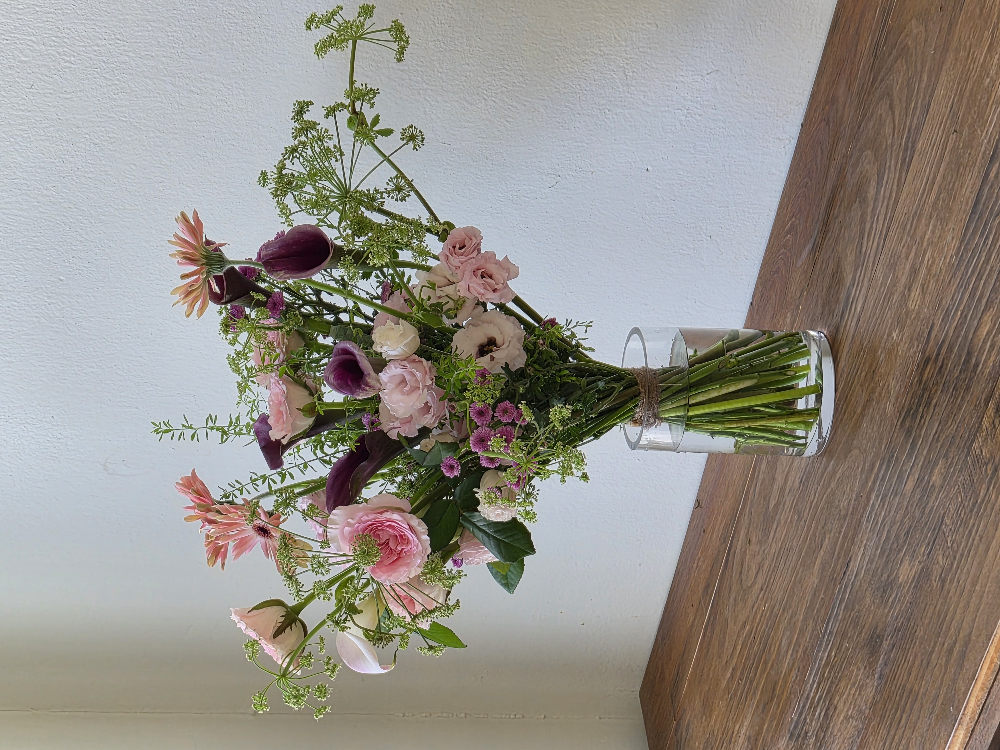
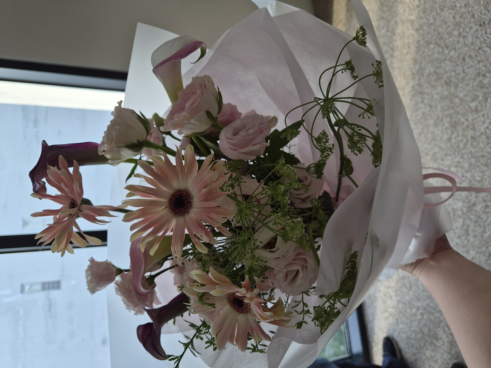

CLASS WORK · HAND-TIED
2026.08.25
ROUND HAND-TIED
BOUQUET
やわらかなピンクと紫のコントラストをまとめたラウンドブーケ
01 / CLASS WORK
CONCEPT
SOFT CONTRAST
IN A ROUND FORM.
부드러운 핑크를 중심으로 아이보리와 딥 퍼플을 더해, 기본 라운드 형태 안에서 색과 형태의 대비가 자연스럽게 읽히도록 구성한 핸드타이드 부케입니다.
장미와 리시안셔스로 중심의 볼륨을 잡고, 거베라와 칼라는 높이와 방향을 달리해 시선을 확장했습니다. 당근초와 애니시다의 가벼운 선을 외곽에 남겨 둥근 기본형이 지나치게 단단해 보이지 않도록 조절했습니다.
やわらかなピンクを中心にアイボリーと深いパープルを重ね、 基本のラウンドフォルムの中で色と形のコントラストが自然に見えるように構成した ハンドタイドブーケです。バラとトルコキキョウで中心のボリュームをつくり、 ガーベラとカラーには高低差と方向性を与えました。 レースフラワーとエニシダの軽いラインを外側に残し、 丸い形が硬くなりすぎないように整えています。
COLOR PALETTE
色の構成
BLUSH,
PLUM,
SAGE.
맑은 블러시 핑크와 페탈 아이보리를 기본으로 두고, 딥 플럼과 연보라를 포인트로 사용했습니다. 세이지 계열의 그린이 서로 다른 꽃의 색과 형태를 연결해 전체 색감을 부드럽게 정리합니다.
澄んだブラッシュピンクとペタルアイボリーをベースに、 深いプラムと淡いラベンダーをアクセントとして加えました。 セージ系のグリーンが異なる花の色と形をつなぎ、 全体の色調をやわらかく整えています。
BLUSH PINK
#E9C1CBPETAL IVORY
#F1E9E1PALE LILAC
#CDB7D8DEEP PLUM
#5A3044SAGE GREEN
#7C8A69MATERIALS
使用花材
만다라 장미와 리시안셔스로 중심의 부드러운 볼륨을 만들고, 페사로 거베라와 퍼플·핑크 칼라로 라운드 실루엣에 방향성과 포인트를 더했습니다. 스프레이 소국과 당근초는 소재 사이를 연결하고, 애니시다는 외곽에 가벼운 선을 만들어줍니다.
バラ ‘マンダラ’ とトルコキキョウで中心のやわらかなボリュームをつくり、 ガーベラ ‘ペサロ’ とパープル・ピンクのカラーで ラウンドの輪郭に方向性とアクセントを加えました。 スプレーマムとレースフラワーが花材の間をつなぎ、 エニシダが外側に軽いラインをつくっています。
만다라 장미
バラ ‘マンダラ’
리시안셔스
トルコキキョウ
페사로 거베라
ガーベラ ‘ペサロ’
칼라(퍼플)
カラー（パープル）
칼라(핑크)
カラー（ピンク）
스프레이 소국
スプレーマム
당근초
レースフラワー
애니시다
エニシダ
SOFT PINK · IVORY
PLUM · GREEN
やわらかなピンクとアイボリーに、
プラムとグリーンを重ねた配色。

수업에서 사용한 주요 소재를 한 장에 기록한 참고 이미지입니다. 완성된 부케에서 보이는 색과 형태가 각각 어떤 꽃에서 만들어지는지 소재 단계와 비교해볼 수 있습니다.
レッスンで使用した主な花材を一枚にまとめた参考イメージです。 完成したブーケに見える色や形が、 それぞれどの花材から生まれているのかを見比べることができます。
COMPOSITION
構成とバランス
ROUND,
HEIGHT,
RHYTHM.
장미와 리시안셔스를 중심부에 모아 안정적인 라운드의 코어를 만들고, 칼라와 거베라를 위쪽과 바깥쪽으로 분산해 시선이 중심에서 자연스럽게 확장되도록 했습니다.
당근초는 둥근 윤곽을 가볍게 풀어주고, 애니시다는 작은 잎과 선으로 외곽에 공기를 남깁니다. 스프레이 소국은 꽃 사이의 빈 공간을 이어 전체 밀도를 정리합니다.
기본형은 라운드이지만 모든 꽃의 높이를 동일하게 맞추지 않고, 포인트 소재마다 약간의 높이 차이를 두어 단정한 형태 안에서도 자연스러운 리듬이 느껴지도록 구성했습니다.
バラとトルコキキョウを中心に集めて安定したラウンドの核をつくり、 カラーとガーベラを上方向と外側へ分散させて、 視線が中心から自然に広がるようにしました。 レースフラワーは丸い輪郭を軽くほぐし、 エニシダは小さな葉と線で外側に空気感を残します。 基本はラウンドですが、すべての花の高さを揃えすぎず、 ポイントとなる花材にわずかな高低差をつけて自然なリズムを残しました。

PROCESS VIEW
CHECKING THE ROUND
OUTLINE BY HAND.
손에 쥔 상태에서는 중심의 밀도와 외곽으로 빠지는 선의 길이 차이가 화병에 세워둔 상태보다 더 직접적으로 보입니다. 스파이럴을 유지한 채 라운드의 기본 윤곽이 무너지지 않는지, 포인트 꽃이 한쪽으로 과하게 쏠리지 않는지를 확인하는 과정입니다.
手に持った状態では、中心の密度と外側へ伸びるラインの長さの差が より直接的に見えます。スパイラルを保ちながら基本のラウンドが崩れていないか、 ポイントとなる花が一方向へ寄りすぎていないかを確認するプロセスです。
FINAL VIEW
完成したかたち

화병에 세워 놓은 상태에서는 줄기의 중심축과 꽃의 높낮이가 한눈에 드러납니다. 라운드 형태를 유지하면서도 칼라와 거베라가 살짝 솟아오르고, 당근초가 바깥으로 퍼지며 단정함과 자연스러움 사이의 균형을 만듭니다.
花瓶に立てた状態では、茎の中心軸と花の高低差がよりはっきりと見えます。 ラウンドフォルムを保ちながら、カラーとガーベラが少し高く立ち上がり、 レースフラワーが外側へ広がることで、 整いすぎない自然なバランスが生まれています。
WRAPPED DETAIL
SOFT WRAPPING,
CLEARER COLOR.
화이트 래핑은 꽃의 색을 방해하지 않으면서 라운드의 윤곽을 한 번 더 정리해줍니다. 가까이에서 보면 거베라의 결, 칼라의 곡선, 장미와 리시안셔스의 겹이 더 선명하게 드러나 소재 간 질감 차이가 강조됩니다.
白いラッピングは花の色を邪魔せず、 ラウンドの輪郭をさらにすっきりと見せてくれます。 近くで見ると、ガーベラの花びら、カラーの曲線、 バラとトルコキキョウの重なりがより鮮明に見え、 素材ごとの質感の違いが際立ちます。

REFLECTION
制作を振り返って
LEARN,
BALANCE,
REFINE.
핸드타이드의 기본이 되는 스파이럴과 라운드 구조를 처음으로 집중해서 연습한 작업입니다. 중심을 안정적으로 모으는 것과, 포인트 소재의 높이와 방향을 동시에 조절해야 한다는 점을 확인할 수 있었습니다.
특히 퍼플 칼라와 거베라처럼 시선이 강하게 가는 소재는 작은 위치 차이만으로도 전체 균형이 크게 달라졌습니다. 반대로 작은 소국과 당근초, 애니시다는 비어 보이는 공간을 연결하면서 라운드의 밀도를 부드럽게 조절해주었습니다.
ハンドタイドの基本となるスパイラルとラウンド構造を 初めて集中して練習した作品です。 中心を安定してまとめることと、 ポイントとなる花材の高さや方向を同時に調整することの大切さを確認できました。 とくにパープルのカラーやガーベラのように視線を集める花材は、 わずかな位置の違いでも全体のバランスが大きく変わることを学びました。
중심의 밀도는 유지하면서 외곽의 선과 높이를 더 정교하게 조절해, 안정적인 라운드 형태 안에서도 자연스럽게 숨 쉬는 움직임 만들기